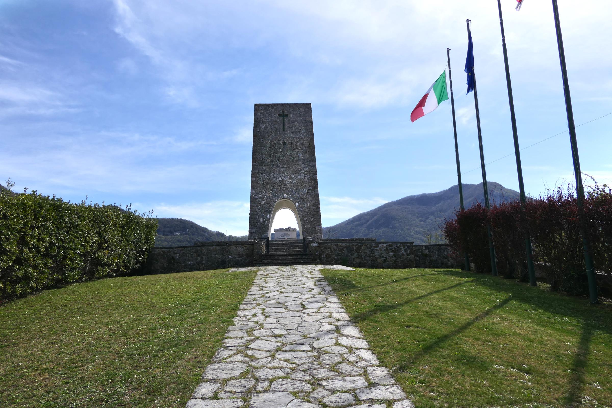

الجريمة
استُهدفت تجمعات مدنية في سانت آنا والقرى المحيطة، وبين الضحايا نساء وأطفال وكبار سن.
إن كنت شاهداً، ناجياً، قريباً، صديقاً، مسعفاً، طبيباً، صحفياً، أو تحمل ذكرى إنسان رحل، يمكنك أن تترك شهادتك أو ذكراك في السجل الحي.
أنت تختار مستوى الخصوصية والنشر. لا تُنشر الشهادة علناً لمجرد إرسالها؛ المراجعة والموافقة جزء من المسار.في 12 أغسطس 1944 قُتل مئات المدنيين في قرى توسكانا خلال عملية نفذتها قوات ألمانية من فافن إس إس بمشاركة متعاونين فاشيين. الذاكرة اللاحقة حولت المكان إلى موقع تعليم للسلام من دون محو الجريمة.

نصب الذاكرة في سانت آنا — صورة محفوظة داخل الموقع.استُهدفت تجمعات مدنية في سانت آنا والقرى المحيطة، وبين الضحايا نساء وأطفال وكبار سن.
تحول الموقع إلى فضاء تذكاري وتعليمي، وصارت الذاكرة مرتبطة بالسؤال عن مسؤولية الجنود والقيادات والمتعاونين.
استغرقت التحقيقات والمحاكمات عقوداً، وهو مثال على الفجوة بين وقوع الجريمة وإنتاج سجل قضائي وذاكرة عامة.
يربط الحرب والقرية والذاكرة والنصب وتحول مكان الفظاعة إلى أداة تعليم للسلام.
كيف يحفظ المكان أسماء الضحايا من دون أن تتحول المأساة إلى رقم أو رمز مجرد؟